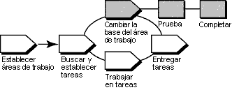

Visión general
En el diagrama siguiente se ilustra el flujo de trabajo de UCM. En esta guía de la herramienta se tratan las áreas
sombreadas.

En el modelo UCM, las actividades (trabajo) que se entregan de varios orígenes se integran y organizan en líneas base.
Por lo general, las líneas base pasan por un ciclo de prueba y arreglo de errores hasta que alcanzan un nivel de
estabilidad satisfactorio. Cuando una línea base llega a este nivel, el gestor de proyectos la designa como una línea base
recomendada para la corriente de datos.
Para trabajar con el conjunto de versiones de la línea base recomendada, cambie la base del área de trabajo de
desarrollo. A fin de minimizar la fusión necesaria mientras entrega actividades, cambie la base del área de trabajo de
desarrollo a medida que esté disponible cada nueva línea base recomendada.
Esta guía de la herramienta se aplica al ejecutar Microsoft Windows.
Pasos de la herramienta
Una operación de cambio de base implica las tareas siguientes:
-
Preparar la vista de desarrollo
-
Iniciar la operación de cambio de base
-
Fusionar archivos
-
Probar el área de trabajo de desarrollo
-
Completar la operación de cambio de base
 Para
obtener información detallada sobre los pasos que debe llevar a cabo para este procedimiento, consulte los temas de la
ayuda en línea de ClearCase que tratan sobre: Para
obtener información detallada sobre los pasos que debe llevar a cabo para este procedimiento, consulte los temas de la
ayuda en línea de ClearCase que tratan sobre:
-
Comparación de archivos, directorios y versiones
-
Fusión de archivos, directorios y versiones
-
Antes de iniciar una operación de cambio de base, incorpore todo el trabajo. ClearCase sólo actualiza los archivos
y los directorios incorporados. El programa de utilidad Buscar extracciones de ClearCase busca las versiones
extraídas de la vista.
-
Navegue al área de trabajo de desarrollo. En el panel situado a la izquierda, pulse el botón derecho del ratón
sobre el directorio view y, a continuación, pulse ClearCase > Buscar extracciones.
Para obtener instrucciones detalladas sobre la búsqueda y extracción de trabajo, consulte el tema de la ayuda en línea
de ClearCase que trata sobre la búsqueda de elementos extraídos.
-
Inicie la operación de cambio de base desde una vista unida a la corriente de datos de desarrollo.
-
El recuadro de diálogo Vista preliminar de cambio de base de corriente de datos muestra las líneas base
recomendadas del proyecto para el cambio de base. Cuando se inicia la operación de cambio de base, se realizan
fusiones de archivo y se informa sobre los conflictos de archivo que se deben resolver de modo manual.
Para obtener instrucciones detalladas sobre este procedimiento, consulte el tema de la ayuda en línea de ClearCase que
trata sobre cómo iniciar una operación de cambio de base.
-
ClearCase fusiona el trabajo de la corriente de datos de desarrollo con el trabajo de la corriente de datos de
integración, completando fusiones triviales automáticamente.
-
Si no se produce ningún conflicto de fusión serio, la operación de cambio de base inicia el programa de utilidad
DiffMerge y solicita al usuario que resuelva los conflictos.
Para obtener
información detallada sobre los pasos de este procedimiento, consulte el tema de la ayuda en línea de ClearCase que
trata sobre la fusión de archivos, directorios y versiones.
-
Compile y pruebe los archivos de origen de la vista de desarrollo para verificar si las actividades no entregadas
se han compilado satisfactoriamente con las versiones de la línea base.
-
Después de cambiar la base, compile y pruebe los archivos de origen de la vista de desarrollo para verificar si las
actividades no entregadas se han compilado satisfactoriamente con las versiones de la línea base.
Completar una operación de cambio de base consta de dos tareas: incorporar todos los resultados de la fusión y cambiar
el estado de la operación a completada.
-
Después de probar el trabajo, pulse Completar en el recuadro de diálogo Estado del cambio de base.
-
ClearCase incorpora todas las versiones extraídas en la vista de desarrollo y notifica a la corriente de datos de
desarrollo que la operación de cambio de base se ha completado.
-
Pulse Cerrar para cerrar el recuadro de diálogo.
 Para
obtener información detallada sobre cada paso, consulte el apartado que trata sobre el "cambio de base del área de
trabajo" del manual Developing Software de ClearCase. Para
obtener información detallada sobre cada paso, consulte el apartado que trata sobre el "cambio de base del área de
trabajo" del manual Developing Software de ClearCase.
|